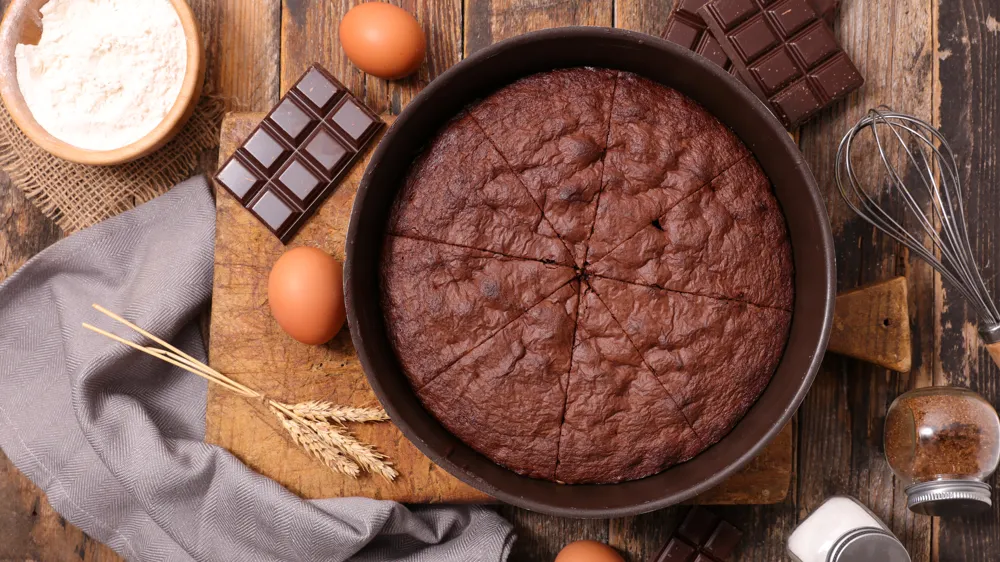

Gateau au chocolat

Description
Un grand classique des desserts
Voici une recette super facile à réaliser et en très peu de temps
Ingrédients
- 200g de chocolat
- 100g de beurre
- 3 oeufs
- 100g de sucre en poudre
Etapes
- Préchauffez votre four à 180°C (thermostat 6). Dans une casserole, faites fondre le chocolat et le beurre coupé en morceaux à feu très doux.
- Dans un saladier, ajoutez le sucre, les oeufs, la farine. Mélangez.
- Ajoutez le mélange chocolat/beurre. Mélangez bien.
- Beurrez à l'aide d'une feuille de papier essuie-tout et farinez votre moule puis y versez la pâte à gâteau.
- Faites cuire au four environ 20 minutes.
- A la sortie du four le gâteau ne paraît pas assez cuit. C'est normal, laissez-le refroidir puis démoulez- le.
retourner en haut de la page
retouner à l'accueil